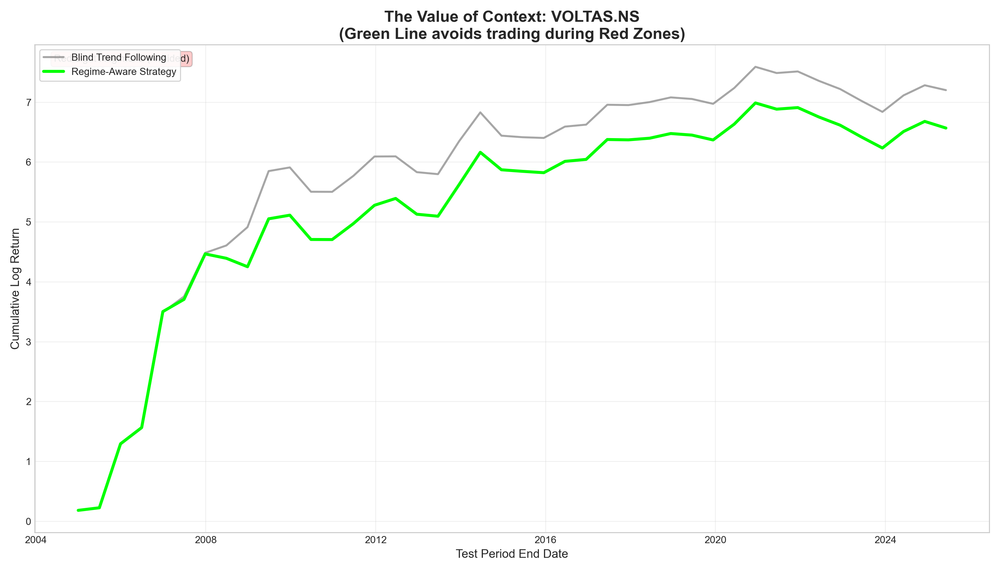
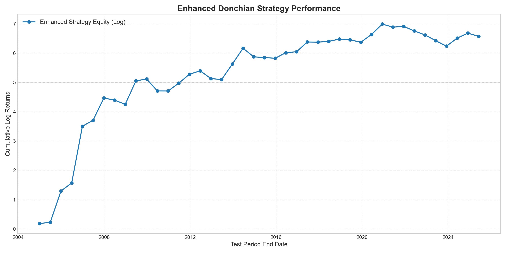

| Stock | Strategy | Total Log Return | Annualized Return | Average P-Value | Num Walk-Forward Periods | Regime Filtering | Pattern Exit |
|---|---|---|---|---|---|---|---|
| VOLTAS.NS | Enhanced Donchian (Regime Filtered + Pattern Exit) | 6.5695 | 31.39% | 0.5989 | 42 | ✅ Enabled | ✅ Enabled |
| Metric | Blind Trend Following | Regime-Aware Strategy | Value Added |
|---|---|---|---|
| Total Return | 7.2029 | 6.5695 | -0.6334 |
| Annualized Return | 34.42% | 31.39% | -3.03% |
| Sharpe Ratio | 6.58 | 6.04 | -0.54 |
| Max Drawdown | -75.27% | -75.27% | 0.00% |
| Volatility | 657.27% | 652.80% | -4.47% |
| Total Trades | 256 | 302 | 46 |

